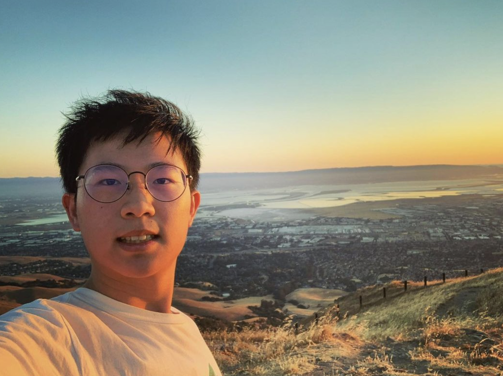

About Main Page
Introduction
Kai-Wen Cheng, also known as Kai, is a current 3rd year Electrical Engineering studying at the University of California, San Diego. He is originally from Taipei, Taiwan, and he moved to the US when he was 15 years old. Kai is passionate about Electronics, Software Design, Computer System, and numerous field of knowledge related to technology. On top of that, he also holds great interest in Macroeconomics.